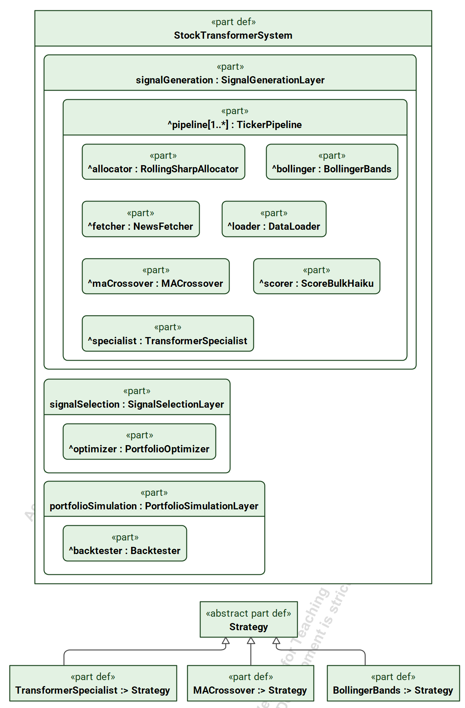
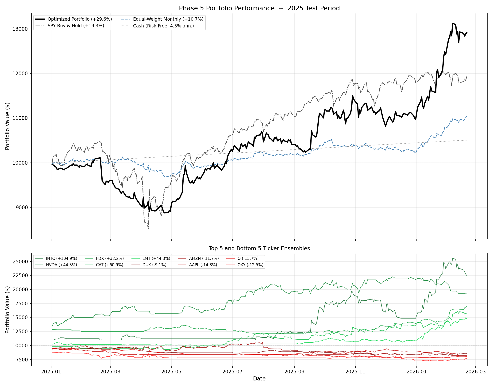
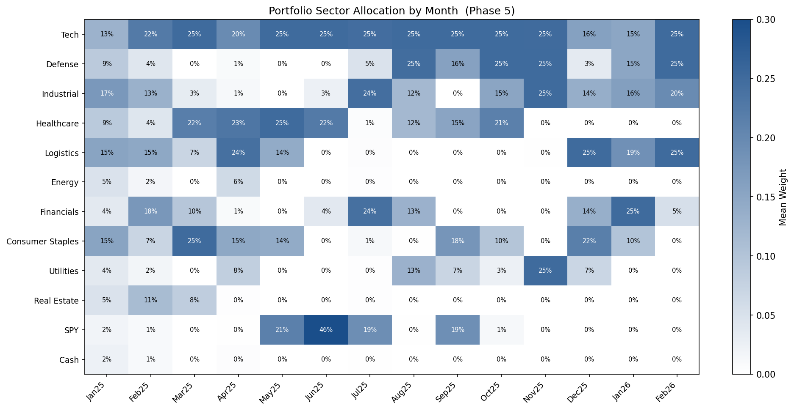
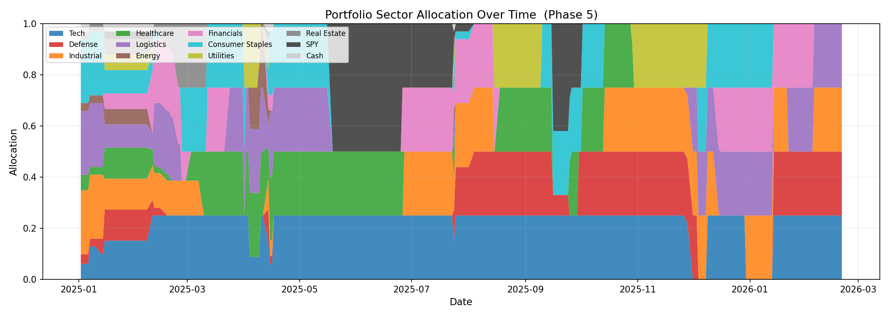
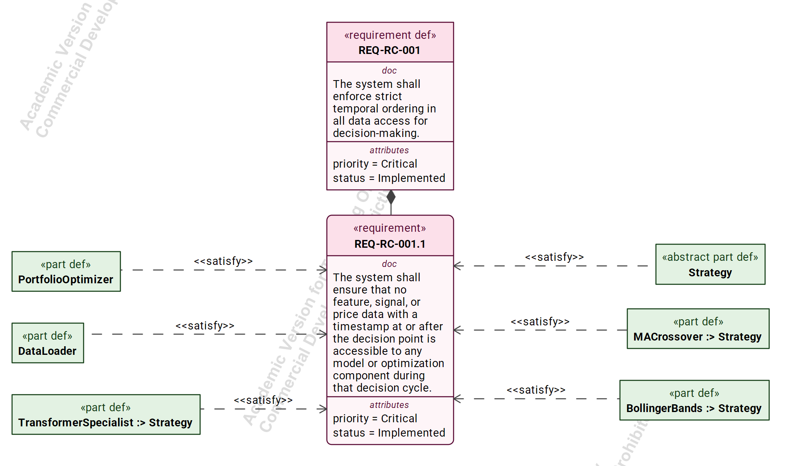
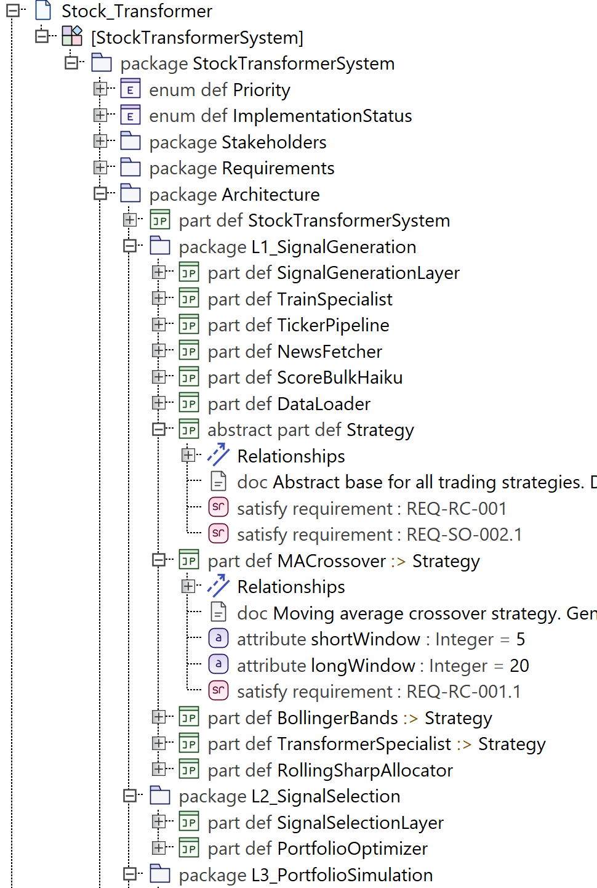

The Problem
Most approaches to stock prediction treat it as a pattern recognition problem: feed historical price data into a model, find the signal. Five development phases revealed why this framing fails in practice.
The model trains on historical data where the dominant regime was a multi-year bull market (2021–2024). Features derived from Open, High, Low, Close, and Volume (OHLCV) data like momentum indicators, moving averages, Bollinger bands, and volatility learn that "up" is the statistically dominant outcome and collapse to predicting it every single day. When you try to correct for that, the model rails to the opposite extreme and sits in cash or sells everything. It's not learning market dynamics. It's memorizing regime-specific statistics and hitting the nearest boundary.
The only reliable predictive edge comes from external information. Large Language Model (LLM) scored news sentiment captures events the market is still processing: tariff announcements, earnings surprises, regulatory decisions. This signal generalizes across regimes because it measures something the price history doesn't contain yet. This isn't a minor improvement. It's the difference between a system that works and one that doesn't. The architecture, optimization, and documentation that follow all stem from this finding.
System Architecture
The system decomposes into three layers, each solving a distinct problem at a different scale.
Layer 1: Signal Generation
Runs independently per ticker. For each of 31 tickers, a three-strategy ensemble generates daily position signals: a moving average crossover for trend following, Bollinger band reversion for mean reversion, and a trained transformer specialist (~26K parameters) consuming LLM-scored sentiment features. A Sortino-weighted rolling allocator dynamically weights these strategies based on recent risk-adjusted performance. Strategies that degenerate get zero weight automatically through the Sortino floor and circuit breaker mechanism.
Layer 2: Signal Selection
Operates across all tickers simultaneously. An Operator Splitting Quadratic Program (OSQP) optimizer allocates capital across 31 active tickers plus SPY (the S&P 500 ETF used as a benchmark) and Cash (risk-free), maximizing expected excess return over SPY minus a risk penalty minus turnover cost. Sector caps (25% per sector across 10 sectors), SPY cap (50%), and full-allocation constraints are all linear inequalities, keeping the problem strictly convex with no post-hoc approximations.
Layer 3: Portfolio Simulation
Applies the optimizer's daily weights to realized returns, charges two layers of transaction costs (per-ticker trading costs in Layer 1, portfolio rebalancing costs in Layer 3, no double-counting), and computes performance metrics against multiple baselines.
The key architectural decision is the separation between signal generation and signal selection. Individual ticker models don't need to be individually profitable. The optimizer's job is to identify which signals to trust on which days and allocate capital accordingly. This is where portfolio value comes from: not better predictions per ticker, but better capital allocation across the full universe.

System Architecture Block Definition Diagram showing three-layer decomposition with strategy generalization hierarchy. Built in Cameo Systems Modeler using SysML v2 (Systems Modeling Language).
Key Technical Decisions
Temporal Enforcement: From Bug to Architectural Constraint
During the 31-ticker expansion, the system reported +119.6% return with a 5.50 Sharpe ratio. Numbers that were immediately suspicious. Investigation revealed look-ahead bias in two locations: the portfolio optimizer's rolling covariance window used inclusive indexing (.loc[:date]), letting the optimizer see today's realized return when computing today's allocation, and all three strategy classes used data.index <= date, letting signals incorporate today's close price.
The fix changed two characters: <= to <. Returns dropped 90 percentage points, from +119.6% to +29.6%. The same bugs existed in Phase 4 but were invisible at 6-ticker scale where +18% return looked plausible. At 31 tickers, the optimizer had enough candidates to cherry-pick from that the bias amplified dramatically.
Architectural Decision
Rather than treat this as a one-time bug fix, it became a formal cross-cutting architectural constraint (REQ-RC-001.1): temporal enforcement must be structural, embedded in data access patterns, not procedural. Six architecture blocks carry satisfy dependencies to this single requirement. The constraint was designed so that a new component physically cannot access future data if it follows the established interface pattern.
OSQP over SLSQP: Scaling the Optimizer
Phase 4 used scipy's Sequential Least Squares Quadratic Programming (SLSQP) solver for 6 tickers with 24 optimization variables. The 31-ticker expansion pushed this to 99 variables (33 positions times 3: weights, buy amounts, and sell amounts, where trading activity is split into separate buy and sell variables to keep the optimization problem mathematically well-behaved). OSQP was selected because it solves convex QP problems using the Alternating Direction Method of Multipliers (ADMM), which decomposes the optimization into smaller subproblems that can be solved efficiently in sequence. This enables native warm-starting with Karush-Kuhn-Tucker (KKT) factorization reuse. KKT conditions are the system of equations that prove a solution is optimal given all constraints. Solving them requires an expensive matrix factorization step. Reuse means that when the problem structure hasn't changed since the last solve, you skip that step and start from yesterday's solution rather than from scratch. Since the covariance matrix only updates weekly while expected returns update daily, the factorization carries over for most daily solves, making the optimizer fast enough for daily rebalancing across 33 positions.
Haiku over Sonnet for Sentiment Scoring: Cost-Benefit Engineering
The system needed 116,000+ headlines scored across 31 tickers. A validation study scored a sample with both Claude Haiku and Claude Sonnet, yielding r=0.869 correlation. Haiku completed the full scoring run in 2 hours for $26. The Sonnet estimate was $260+ for negligible accuracy improvement. This 10x cost reduction with validated quality preservation is the kind of engineering tradeoff that matters at scale, and the validation methodology (correlation analysis before committing spend) is documented as part of the verification chain.
Ensemble Architecture: Designing for Rotation
In the current system, OHLCV-based strategies consistently degenerate and carry zero weight. The sentiment specialist carries all signal. So why keep the ensemble? Because the architecture is designed for the 31-ticker universe, not any single ticker. Across different sectors and market conditions, different strategy types may carry signal on different tickers. The Sortino-weighted allocator automatically discovers which strategies contribute and suppresses those that don't. No manual intervention required. The ensemble is the mechanism that makes the system extensible without retraining the allocation logic.
Results
Over 284 test days (January 2025 through February 2026), the optimized portfolio returned +29.6% with a 1.36 Sharpe ratio and -12.2% maximum drawdown. SPY returned +19.3% over the same period with a 0.66 Sharpe and -18.8% maximum drawdown. The equal-weight monthly baseline returned +10.7%.
The risk-adjusted story matters more than the raw return. The portfolio beat SPY by 10 percentage points while cutting maximum drawdown by a third and nearly doubling the Sharpe ratio. During the Q1 2025 broad market downturn, SPY drew down roughly 15%. The portfolio drew down 12.2% over the same period and recovered faster, pulling ahead from May onward.
The optimizer's behavior confirms the architecture is working as designed. Tech hit the 25% sector cap on 249 of 284 days. This was during NVIDIA's well-documented run, meaning the optimizer consistently wanted more tech exposure but the constraint prevented concentration risk. SPY allocation peaked at 46% in June 2025 during an uncertain transition, then dropped to zero when confidence returned. Energy (0.9% average) and Real Estate (1.8% average) received near-zero allocation, consistent with weak specialist accuracy on those tickers. Genuine sector rotation is visible across Healthcare, Industrial, Defense, Financials, and Logistics depending on the period.

Equity curve comparison over 284 test days (January 2025 through February 2026). Portfolio achieved +29.6% return vs SPY +19.3% with significantly lower drawdown and higher risk-adjusted returns.

Monthly sector allocation showing optimizer behavior: Tech consistently near the 25% cap, SPY used as uncertainty buffer peaking at 46% in June 2025, and genuine rotation across Healthcare, Industrial, Defense, and Logistics.

Daily sector allocation over the full test period. The stacked view shows how the optimizer shifts capital between sectors as sentiment signals evolve.
MBSE Documentation
This project applies International Council on Systems Engineering (INCOSE) Model-Based Systems Engineering (MBSE) methods to a quantitative finance software system. This cross-disciplinary application is deliberate: SE methods are well-established in aerospace and defense but rarely applied to software-only systems, and essentially never to quantitative finance. The documentation demonstrates that the methodology transfers, and that it reveals architectural risks that weren't visible during development.
The traceability chain follows the full V-model. Seven stakeholders with 47 documented needs decompose into 110 derived technical requirements and 17 system constraints, each traced forward to implementing architecture blocks and verification evidence.
The Cameo SysML v2 model contains the full package hierarchy: stakeholder packages, requirements with priority and implementation status metadata, 17 architecture block definitions with 51 typed attributes, a strategy generalization hierarchy (abstract Strategy specializing to MACrossover, BollingerBands, and TransformerSpecialist), and 106 satisfy relationships linking blocks to requirements.
The most valuable output of the retroactive MBSE process was identifying cross-cutting consistency risks invisible during development. Parameters like risk_free_rate, transaction_cost, and temporal cutoff dates must be synchronized across multiple modules with no enforcement mechanism. The constraint CON-SO-002.1 (ticker and sector additions must not require code changes) is formally violated: adding a single ticker currently requires editing at least four source files. These gaps are precisely what the traceability discipline is designed to surface.

Cross-cutting temporal enforcement constraint (REQ-RC-001.1) with satisfy dependencies converging from six architecture blocks. Built in Cameo Systems Modeler using SysML v2.

Cameo SysML v2 Package Explorer showing model hierarchy: architecture packages with part definitions, typed attributes, documentation, and satisfy relationships linking blocks to requirements.
What I'd Do Next
These are scope boundaries that were set deliberately to keep the project focused, not gaps or regrets. Each one represents a natural next phase of development.
Centralized Configuration
The highest-impact architectural improvement would be consolidating parameters scattered across modules into a single configuration source. Risk-free rate appears in the optimizer, allocator, and backtester with no enforcement that they match. Transaction cost, temporal boundaries, and sector mappings are similarly distributed. This was a known simplification from the start. The MBSE traceability process confirmed it as the top architectural gap.
Regime Detection
The current system has no explicit awareness of bear vs. bull market conditions. Adding a state space model for longer-sequence regime detection would allow the allocator to adjust strategy weights based on detected market state rather than purely trailing Sortino performance. This was deferred to keep the initial architecture focused on the core signal generation and selection problem.
Per-Ticker Hyperparameter Tuning
The 31 transformer specialists were trained with identical hyperparameters. Given the variation in specialist accuracy across tickers (RTX at 0.630 vs. O at 0.374), per-ticker tuning is likely lower-hanging fruit than adding new model architectures. Standardized hyperparameters were a deliberate choice to isolate the effect of the sentiment signal without introducing a tuning confound.
Automated Temporal Validation
The look-ahead bias fix is structurally enforced, but there is no end-to-end pipeline test that validates it. A regression test injecting known future data and verifying it doesn't leak into decisions would close this gap permanently. Adding this test was deferred in favor of completing the MBSE documentation chain.